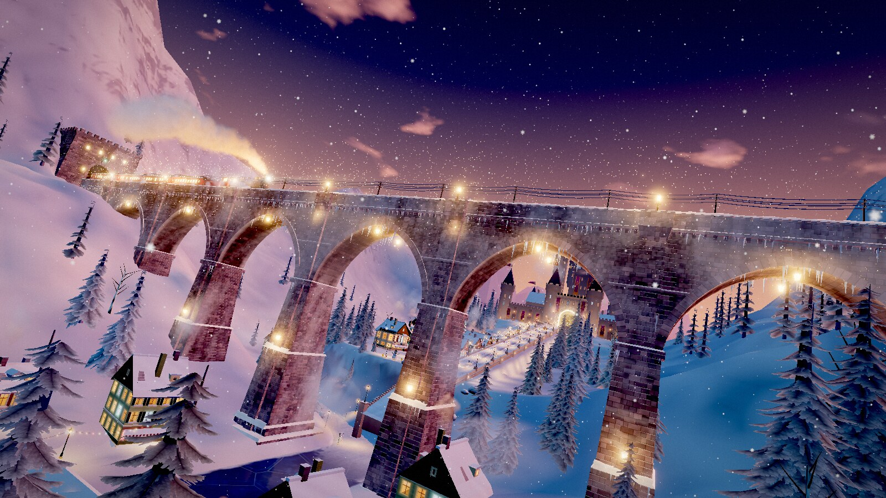
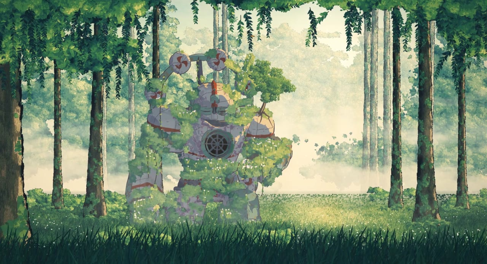

 Portals Ethan Mollick · 471 个世界 一场不用操作的飞行。每个世界都是代码在浏览器里现场生成的场景，门里已经是下一个世界，没有剪辑，也没有淡入淡出。 打开演示 源代码
 The Moss Keeper Chetaslua · 单文件 HTML 苔藓巨人与森林的代码动画短片：日出时，长满苔藓的巨人在遗忘的森林里醒来。学习用代码组织绘画质感、场景和镜头。 打开演示 源代码 原帖